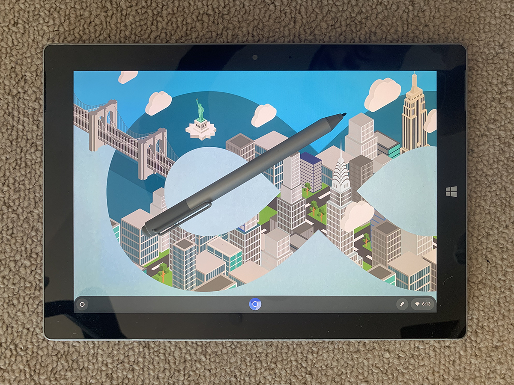

给 Surface 3 安装 ChromeOS
Contents
今天我翻出了藏在抽屉里的一台 2015 年购入的 Surface 3（没有 Pro）打算用来看片。上面的 Windows 10 实在是卡，于是尝试安装 ChromeOS。
背景
由于桌面空间限制，我的两台显示器必须竖起来一台。
由于最近在家办公，需要给工作电脑插显示器，自然选择横着的那个。
于是自己的电脑就只能使用竖着的屏幕，不便看片。
为什么不切换横屏的数据源呢？因为 H310 或是黑果或是线材或是显示器的某种问题，在两台电脑之间切换显示器非常困难，须要休眠唤醒方能认出且整个过程长达数分钟之久，非常不方便。
操作
意想不到的简单。
-
准备安装介质
在这儿下载 Cloudready 提供的镜像，从 Chrome 商店中安装 Chromebook Recovery Utility 并用其刷录到 U 盘中。
-
安装
将 U 盘插到 Surface 3 上，按住音量减，点击电源键，松开音量减即可从 U 盘启动。根据提示连接网络登录 Google 账号并选择安装即可。约十分钟后装好自动关机。
-
开机
再次联网登录 Google 账号即可使用。

小插曲
我本以为需要使用某种组合键才能实现从 U 盘启动，于是将外接键盘插到了 Surface 上并很快发现只有一个 USB 口无法再插 U 盘了。我没有正规 USB Hub，键盘上自带的 Hub 供电捉鸡，于是动用显示器作为 Hub，顺便把插在上面的 Soundbar 也搭过去了。
这带来了一个问题，在登录 Google 账号的那步，我需要先从电脑上的密码管理器里获取我的密码，而键盘挪到了 Surface 上，无法登录密码管理器。此时又不能把键盘挪回来，因为把键盘从显示器背后拔出来比较困难，而把整个 Hub 从 Surface 上拔出来会导致正在使用的 U 盘掉线。
于是我打开了虚拟键盘。macOS 的虚拟键盘做的真是好，和真键盘一样一样的，修饰健也必须按住才管用。而我只有一个鼠标指针，遂失败。（用手机）搜索一番后有人提出可用粘滞键解决，尝试后依然未果。
不得不又掏出另一台陈年老笔记本，充上电，打开密码管理器获取密码。先后经历了 Surface 断网和笔记本莫名黑屏后终于获得了我的 Google 账号的密码并成功登录和安装。
大大大大大坑
试了一下发现 Surface Pen 可用，但有显著的延迟。同时在 Chrome 里编辑 PDF 体验不佳。
尝试打开 bilibili，报错。在系统设置中安装解码器后修复。
但是没有声音，没有声音，没有声音！干啥都没有声音！包括插耳机。这里说 Atom 系列 CPU 的声音问题怎么都搞不好，建议使用 USB 或蓝牙音频输出设备。
我尝试了一番 alsamixer 命令并没有获得什么进展，还遇上了另一个坑。这个命令需要配合一些 F 键使用，而我按了总是有奇怪的反应。后来经这里提醒，需要在系统设置中启用 treat top row of keyboard as function keys 才能正确使用 F 键们……
另外还看不到电池状况，看不到电池状况，看不到电池状况！哪都看不到！
弃坑。
Author SEIAROTg
LastMod 2020-04-06